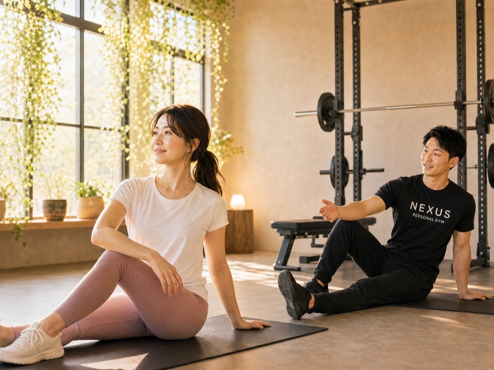
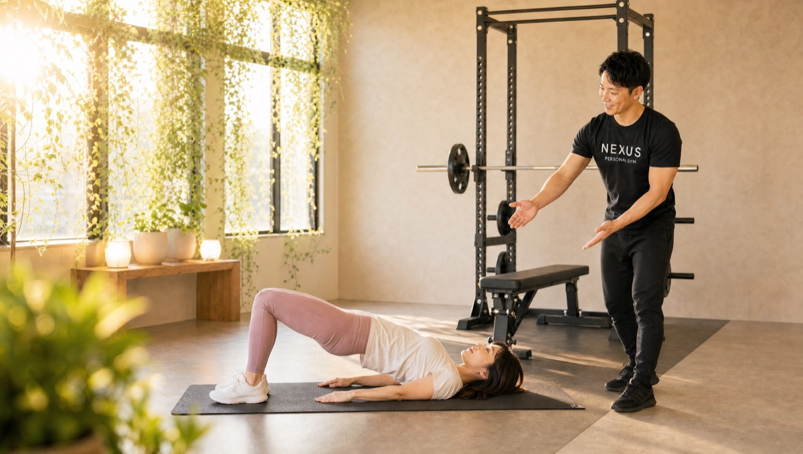
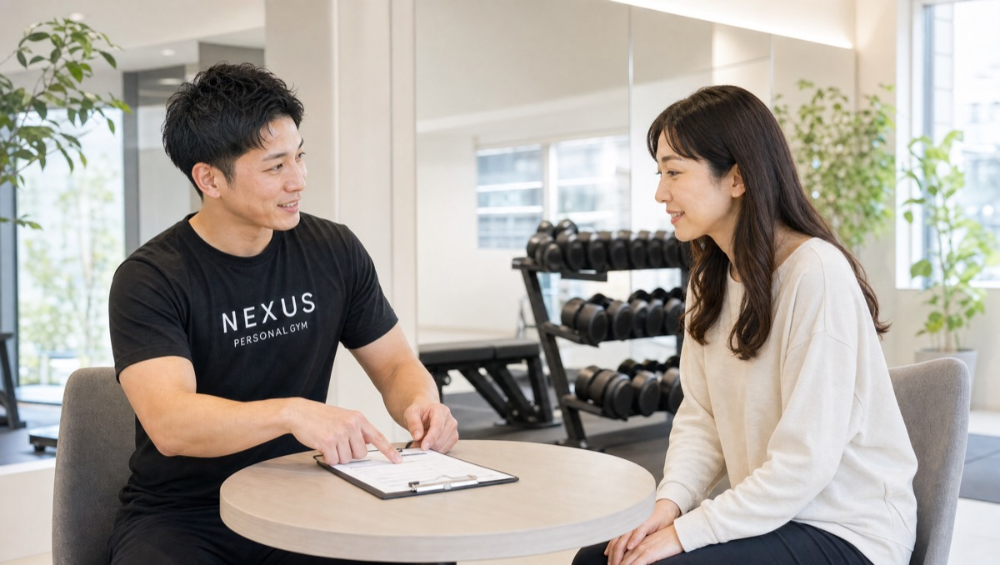
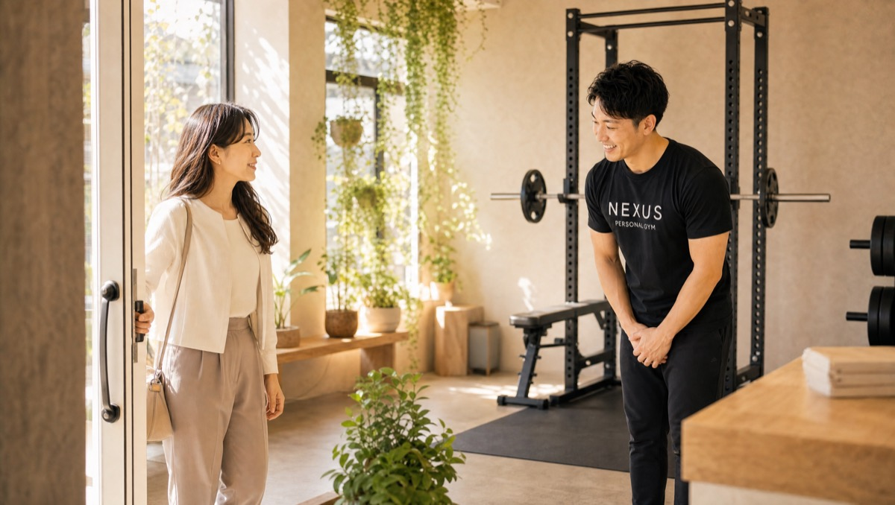
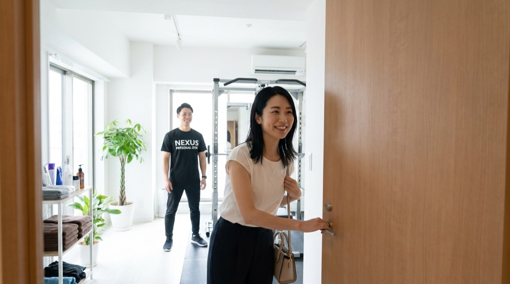
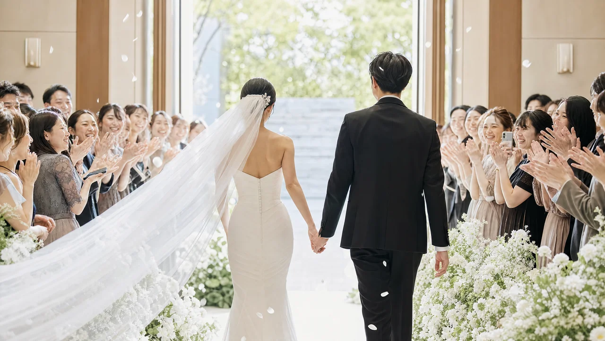
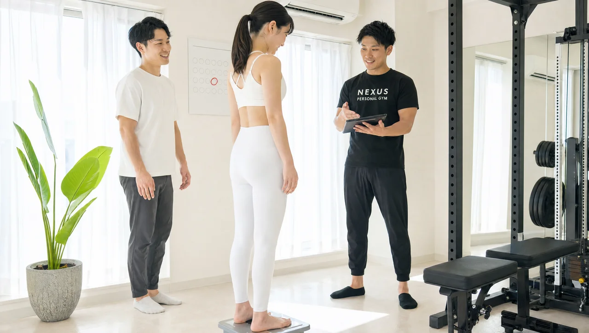
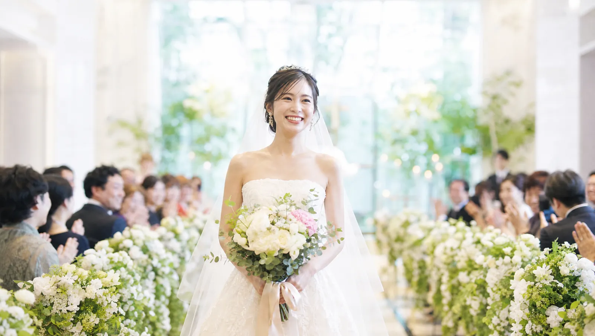
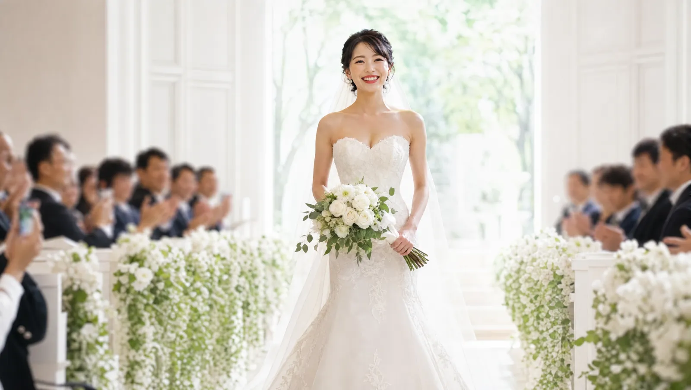
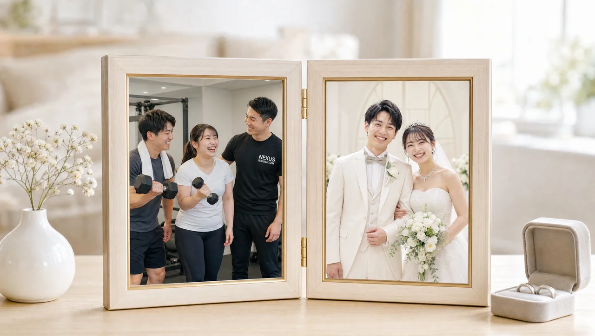

NEXUS Personal Gym ／ 愛知県名古屋市千種区
NEXUSパーソナルジム 本山店｜本山で、静かに自分と向き合う完全個室ジム

名古屋市千種区松竹町、地下鉄東山線・名城線の本山駅からすぐにある完全個室パーソナルジムです。Google口コミは★5.0（8件・2026年7月時点）。にぎやかな街から一歩離れた落ち着いた本山エリアで、「静かに自分と向き合いながら、無理なく始めたい」という方に選ばれています。減量が目的の方も、運動が久しぶりで不安な方も、一人ひとりの体力に合わせた無理のない設計だから安心。話しやすいトレーナーが、食事とフォームまで分かりやすく指導します。完全個室で担当トレーナーと二人だけだから、人目を気にせず集中でき、隠れ家のように落ち着いて通えます。会員の約85%が女性で、運動初心者の方も多数。ウェア・タオル・プロテインまで無料で手ぶらOK、毎日8:00〜23:00・LINE予約で、仕事帰りにも通えます。誰にも知られず取り組める、結婚式前のブライダルボディメイクにも対応しています。
- ブライダル対応
- 完全個室
- Google口コミ★5.0
- 本山駅すぐ
- 運動初心者歓迎
- 落ち着いた環境
- 手ぶらOK
この店舗の特徴
NEXUS本山店は、名古屋市千種区松竹町にある完全個室パーソナルジム。地下鉄東山線・名城線の本山駅からすぐという好立地です。同じ千種区にある名古屋今池店が、栄・千種方面からのアクセスとにぎやかさで多くの方に選ばれているのに対し、本山店は「にぎやかな場所より、落ち着いた環境で静かに始めたい」という方の受け皿。本山は繁華街の喧騒から一歩離れた、落ち着いた雰囲気の街です。だからこそ、完全個室のマンツーマンで、人目を気にせず自分のペースで、じっくり身体と向き合えます。減量が目的の方、運動が久しぶりで不安な方も、体力に合わせた無理のない設計で安心してスタート。話しやすいトレーナーが、食事とフォームまで一つひとつ分かりやすく指導します。Google口コミ★5.0（8件）という評価は、この落ち着いた環境と丁寧な指導への信頼のあらわれ。本山で、静かに、けれど確かに変わっていく——そんな身体づくりを始めてみませんか。
久しぶりの運動でも、無理のない設計

「何年も運動していないのに、ついていけるだろうか」——本山店に来られる方の多くが、そんな不安を抱えてスタートします。実際に、「運動が久しぶりで不安だったが、無理のないプログラムで安心して続けられている」という声を多くいただいています。本山店のトレーニングは、決まったメニューをこなすのではなく、一人ひとりの体力・目的・その日のコンディションに合わせて組み立てるオーダーメイド。最初は軽い動きから始め、前回の様子を踏まえて少しずつ負荷を調整していくので、体力に自信がない方でも息切れせずに続けられます。完全個室のマンツーマンだから、フォームのちょっとした崩れもその場で修正。正しい動きを一から身につけられるので、間違ったクセがつく心配もありません。「今日は疲れているから軽めに」という体調の波にも柔軟に対応。だから、久しぶりの運動でも「これなら続けられそう」と感じていただけます。
話しやすいトレーナーの、分かりやすい指導

パーソナルジムが続くかどうかは、トレーナーとの相性で大きく変わります。本山店では、「トレーナーが丁寧で話しやすく、食事とフォームのアドバイスが分かりやすい」という評価をいただいています。専門用語を並べるのではなく、「なぜこの動きが効くのか」「なぜこの食べ方がいいのか」を、その方が納得できる言葉で一つひとつ説明します。だから、言われた通りにこなすだけでなく、自分で理由を理解しながら取り組めます。食事についても、極端な制限を押し付けるのではなく、日々の生活のなかで無理なく実践できる範囲でアドバイス。フォームは完全個室のマンツーマンで一から丁寧に指導するので、正しい効かせ方が身につきます。全トレーナーは3ヶ月の自社教育プログラムを修了してからデビューし、「優しく寄り添う指導」を全店共通の基準としています。質問しづらい、置いていかれる——そんな心配なく、安心して通える環境です。同じ千種区の名古屋今池店も、同じ基準の指導で★4.9（104件）の評価をいただいています。
仕事帰りの、減量ルーティン

減量を成功させる最大のコツは、トレーニングを「特別なこと」ではなく「生活のルーティン」にしてしまうことです。本山店なら、予約・変更はLINEからサッと完結。6時間前まで無料でキャンセル・変更ができるので、急な残業や予定変更にも対応しやすい設計です。さらに、ウェア・水・タオル・プロテインまですべて無料でご用意しているので、仕事帰りに手ぶらでふらっと立ち寄れます。着替えを詰めたバッグも、洗って持ち帰るタオルも必要ありません。本山駅からすぐなので、通勤の乗り換えついでに寄れる立地。完全個室なので、着替えや身支度も人目を気にせず。トレーニングが終わったら、また身軽に日常へ戻るだけ。「わざわざ行く」のではなく「帰り道に寄る」——この気軽さがあるからこそ、減量に必要な"続ける"が実現します。週1〜2回のペースでも、生活動線のなかに組み込めば、無理なく習慣になっていきます。

東山線・名城線の2線が使える本山駅
本山店は、地下鉄東山線・名城線が乗り入れる本山駅からすぐの、名古屋市千種区松竹町にあります。本山駅は名古屋市内を東西に結ぶ東山線と、環状に走る名城線が交差するターミナル。栄・池下方面からも、大曽根・八事方面からも乗り換えなしで通えるアクセスの良さが魅力です。それでいて、駅周辺は繁華街のような喧騒がなく、覚王山にも近い落ち着いた住宅地の雰囲気。「通いやすさ」と「静かに集中できる環境」を両立できるのが、本山という立地の強みです。NEXUSは同じ千種区に、この本山店（松竹町）と名古屋今池店（今池）の2店舗があります。にぎやかな環境が好みなら今池店、静かにじっくり取り組みたいなら本山店、と生活圏や気分に合わせて使い分けることもでき、会員の方は他店舗もご利用いただけます。まずは無料体験で、本山の通いやすさと落ち着いた雰囲気を確かめてみてください。
千種区のもう一軒｜名古屋今池店を見るPrice料金プラン
入会金は通常55,000円、無料体験当日入会で15,000円（税込）に割引。AI食事指導は月額3,000円（税込）。ウェア・プロテイン込みで、この価格。全店舗共通の料金です。
Bridal Body-make結婚式まで、最高の自分をつくる本山店のブライダルボディメイク
本山店では、挙式日から逆算した結婚式前のボディメイクに力を入れています。ドレスで視線が集まる背中・二の腕・デコルテ・ウエストを、完全個室のマンツーマンで整えます。会員の約85%が女性。体に不必要に触れないノータッチ指導を基本にしているので、はじめての方も安心してトレーニングに集中できます。落ち着いた本山の隠れ家のような環境で、誰にも知られず、静かに理想へ近づく——挙式に向かう物語に、本山店が伴走します。





「ドレスの試着で二の腕が気になった」「背中の開いたデザインを、体型を理由に諦めたくない」——挙式という動かせない期日があるからこそ、ボディメイクは最後までやり切れます。本山店では、まず挙式日とドレスのデザインをうかがい、挙式日から逆算した90日プラン・60日プランで「いつまでに、どの部位を、どこまで」を最初に設計します。残された日数が少なくても、部位を絞って集中的に取り組めば体のラインは十分に変えられます。極端な食事制限で当日フラフラ……ということがないよう、その日のコンディションから逆算する無理のない指導で、式当日にピークを合わせます。目標が数字ではなく“当日の自分の姿”だからこそ、「このデザインで大丈夫かな」から「このドレスを選んでよかった」へと、モチベーションが途切れません。
東山・覚王山エリアで挙式を予定されている方に。本山店は完全個室・完全予約制だから、トレーニング中に誰かと顔を合わせることはありません。静かな完全個室で、誰にも知られず式当日までの準備を。「こっそり綺麗になって、当日みんなを驚かせたい」——そんな願いを、落ち着いた本山の隠れ家のような環境が叶えます。打ち合わせや試着の帰りに、本山駅すぐで30分から。準備で慌ただしい時期でも、生活動線のなかへ無理なくトレーニングを組み込めます。
挙式90日前に入会し、週1〜2回のペースで通いました。背中の開いたドレスに合わせて、二の腕と背中を中心にプランを組んでもらい、途中のドレス試着ではっきりサイズダウンを実感。完全個室で誰にも会わないので、準備していることは家族にも内緒にできました。フォームを一から教わったので、家での自主トレも効くように。当日は最高のコンディションでバージンロードを歩けて、式後もそのまま通っています。
上記はサービス内容をわかりやすく伝えるためのモデルケース（イメージ）であり、特定のお客様の口コミではありません。
そして、挙式はゴールではなく新しい生活のスタートでもあります。せっかく作り上げた身体を、そのまま新生活の習慣に。本山店は毎日8:00〜23:00営業・月4回18,000円（1回4,500円〜）から続けられるので、挙式後の体型維持から、産後のボディメイクまで、人生の節目に長く伴走します。全国約70店舗のネットワークがあるため、引っ越しや里帰りの際も最寄り店舗へ。「一生に一度」のために始めた習慣が、その後の人生を支える土台になります。
挙式日からの逆算タイムライン｜ブライダル専用ページを見るReviewsお客様の声
NEXUS本山店はGoogle口コミ★5.0（8件・2026年7月時点）。落ち着いた本山エリアで、無理なく始められる丁寧な指導が評価されています。完全個室で人目を気にせず取り組める環境と、話しやすいトレーナーの分かりやすいアドバイスが、続けやすさにつながっています。
減量目的で入会しました。完全個室なので人目を気にせず、初心者の自分でも続けやすい環境です。周りと比べて焦ることもなく、自分のペースで取り組めるのがありがたいです。
鈴木トレーナーが丁寧で話しやすく、食事とフォームのアドバイスがとても分かりやすいです。無料でプロテインもいただけるのも嬉しいポイント。毎回通うのが楽しみになっています。
運動が久しぶりで不安でしたが、無理のないプログラムで安心して取り組めています。少しずつ体が変わってきているのを感じて、これからの変化がとても楽しみです。
アクセス
- 店舗名
- NEXUSパーソナルジム 本山店
- 住所
- 〒464-0823
愛知県名古屋市千種区松竹町1-2 ARK HUSE南館4階A号 - 最寄り駅
- 地下鉄東山線・名城線 本山駅（すぐ）
- 営業時間
- 毎日 8:00〜23:00
- 電話番号
- 050-1790-8499
本山店のよくある質問
Q本山・覚王山エリアにパーソナルジムはありますか？+
Q運動が何年ぶりでも大丈夫ですか？+
Q今池店との違いは何ですか？+
Q結婚式を周囲に知られずに準備したいのですが可能ですか？+
Qドレスから見える背中・二の腕を集中的に引き締められますか？+
Qパートナーと2人で通えますか？+
よくある質問（全店共通）
料金・制度などNEXUS全店に共通するご質問です。さらに詳しくは110問のFAQをご覧ください。
Q料金はいくらですか？+
Q手ぶらで通えますか？+
Qキャンセルはいつまでできますか？+
Q食事指導はありますか？+
Qトレーナーはどんな人ですか？+
Q女性会員は多いですか？+
Q体験の流れは？+
NEXUSパーソナルジムの特徴・料金をもっと見る